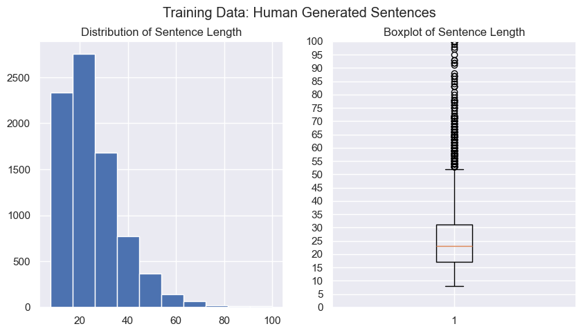
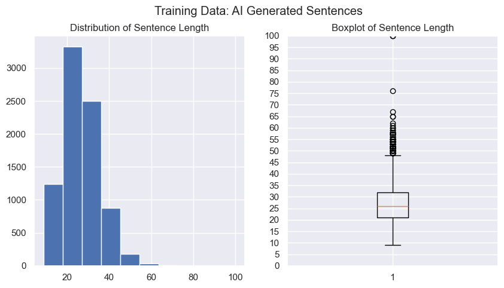
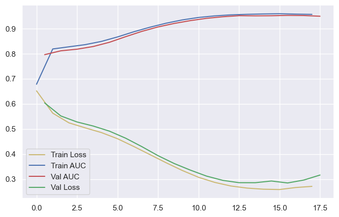

Project
A neural network that scores each sentence of a paragraph and averages the scores to estimate whether the paragraph was written by a human or by AI.
The text arrives pre-embedded: each sentence is a 100 × 768 grid of numbers (up to 100 tokens, 768 values per token), padded with zeros for shorter sentences.
Loads human, AI and synthetic sentence embeddings (each 100 × 768) and labels human 0, AI 1, giving 17,667 sentences.
Counts real (non-padding) tokens per sentence and compares human vs AI length distributions.
Shuffles and splits 80/20 into 14,133 training and 3,534 validation sentences.
Flatten → Dense 300 → Dense 100 → sigmoid, trained with Nadam, an exponential learning-rate schedule and early stopping; the model is saved.
Each sentence in a paragraph gets an AI probability; the probabilities are averaged into one paragraph score.
Computes paragraph-level ROC AUC on the validation set (0.90) and writes test predictions to a CSV with id and y_prob.
Before modelling, the notebook counts the non-padding tokens in each sentence to compare sentence lengths for human and AI text.


A feed-forward neural network built in Keras that classifies a single sentence.
